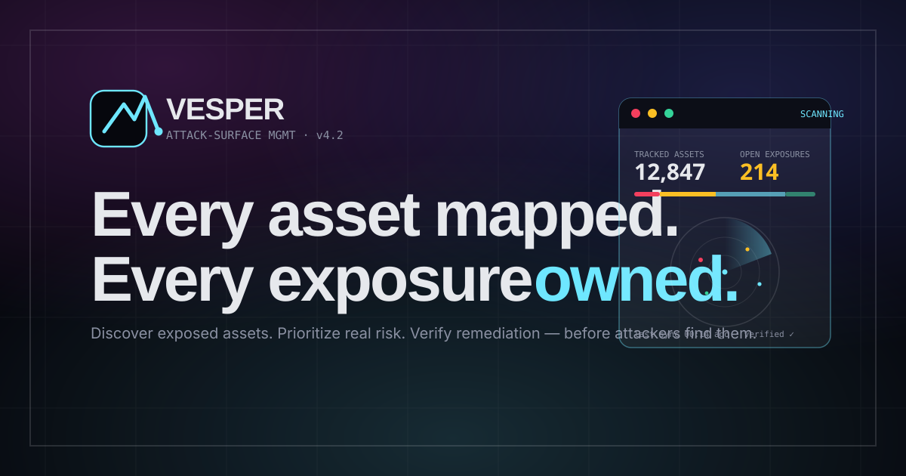

A premium single-page website for a fictional external attack-surface management platform. Glassmorphism surfaces meet Cyber Minimal discipline — translucent frosted panels, an atmospheric mesh, Sora display type, JetBrains Mono metadata, and a hand-built attack-surface command-console hero.

click the frame to open the full page
/ Sections
Every section serves the attack-surface story — no filler blocks.
Hero
Editorial-cyber split + attack-surface console with radar + sparkline.
02Logos strip
Marquee of fictional security-first customer brands.
03Three pillars
Discover · Prioritize · Remediate — frosted-glass panels.
04Topology graph
Asset reachability diagram with exposed path in cyan.
05Lifecycle
Five-step EASM workflow with timings + signed-state rail.
06Outcomes band
MTTR / exposures / shadow assets / noise on a glass grid.
07Proof
Featured pull-quote + secondary security-leader testimonials.
08Pricing
Per-asset tiers with featured Team plan.
09FAQ
Single-open scoped accordion, ARIA + keyboard.
10CTA
Glass conversion panel + 3-step onboarding.
11Footer
Six-column nav + live system status + legal.
12Navbar + menu
Sticky glass nav with scoped mobile menu + mono labels.
/ Design system
Palette
canvas
#06070D
surface
#0C0E17
ink
#E6E8EC
muted
#8A90A2
cyan
#6EE7FF
amber
#FBBF24
red
#F43F5E
ok
#34D399
Typography
Sora
display · 400–800
Inter
body · 400–700
JetBrains Mono
labels & metadata · 400–700
Geometry
Frosted glass
rounded-2xl · blur(20px)
Single accent
cyan · signal-only
Atmospheric mesh
low-opacity fuchsia/indigo/cyan · restrained glow